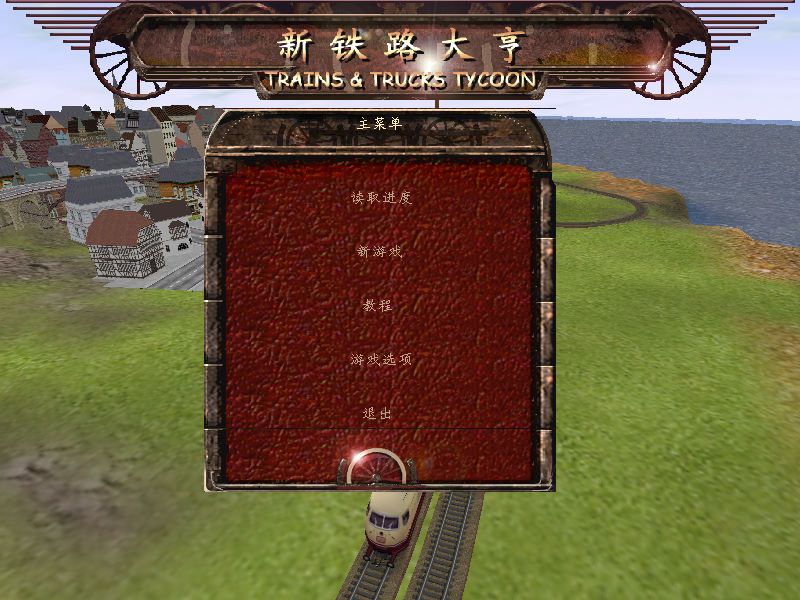
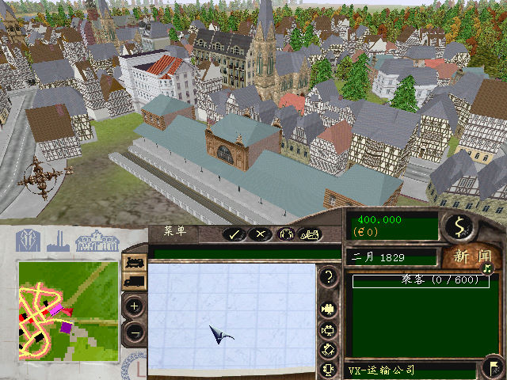

名稱：新鐵路大亨 (Trains and Trucks Tycoon，簡中／英文版) 簡介：Virtual X-citement 2002年出品的鐵路經營模擬遊戲，由Ubisoft代理發行 [待補]。

保護：英文版為光碟SafeDisc 2.51，簡中版無保護 備註：簡中版安裝完為1.1版 備註：簡中版執行限制（英文版無此限制）： 1.XP以上系統執行時，需設定Trans and Trucks Tycoon.exe為Win9x相容。 2.VirtualBox+XP、VMware+Win98、Win64+dgVoodoo2均無法執行，VMware+XP可執行，但文字 顯示變亂碼（不設定Win9x相容時，文字顯示正常，但遊戲緩慢、進入遊戲後部份畫面全黑， 且退出遊戲後作業系統會整個崩潰，必須重開機）。 3.PCem+Win98執行正常，遊戲速度略為緩慢。 檔案：Patch11.rar = 英文1.1更新檔 nocd10.rar = 英文1.0免光碟檔 nocd11.rar = 英文1.1免光碟檔